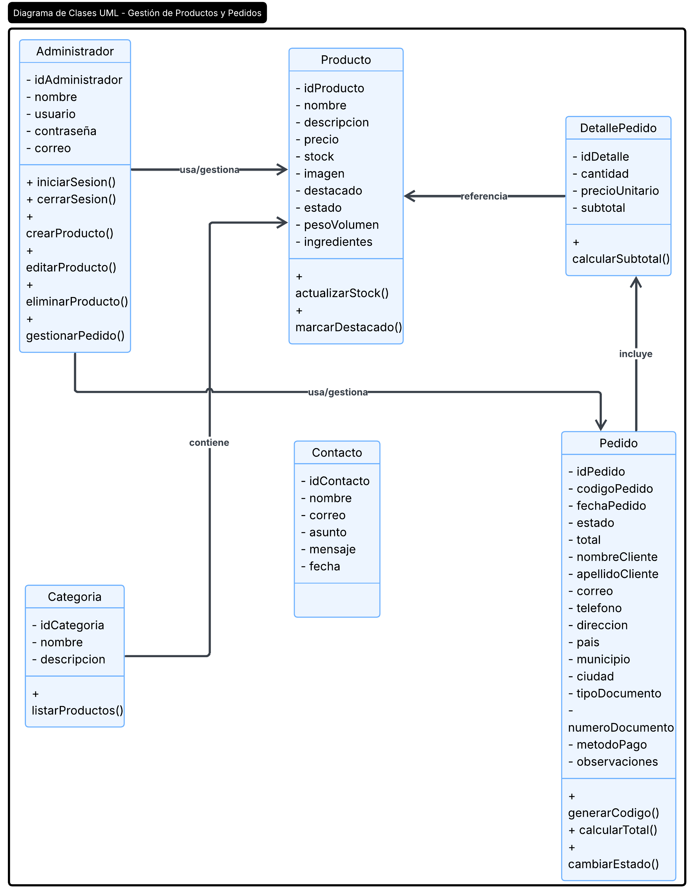
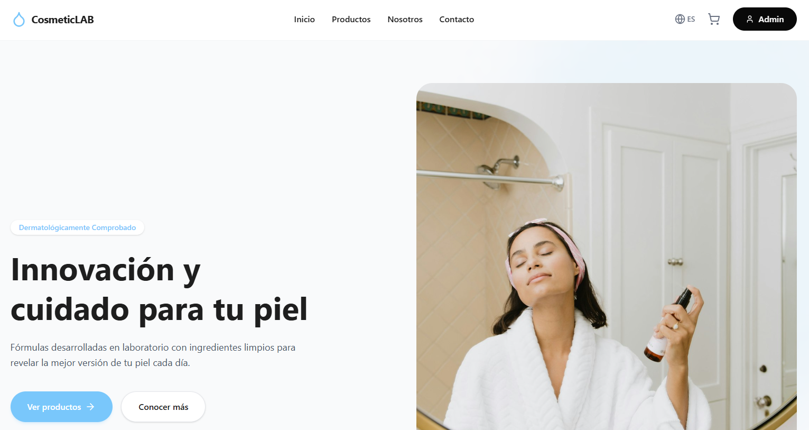

🎯
Objetivo Cumplido
Se diseñó una solución web que fortalece la presencia digital de CosmeticLAB mediante un catálogo interactivo y un panel administrativo para la gestión de productos y pedidos.
Una solución moderna para organizar, vender y fortalecer un negocio de belleza.
¿Cómo puede un pequeño emprendimiento competir en un mercado cada vez más digital?
CosmeticLAB nace como respuesta a esta pregunta, desarrollando una plataforma web que fortalece la presencia digital del emprendimiento y mejora la gestión de sus productos y pedidos.
El crecimiento de los pequeños emprendimientos de belleza ha incrementado la necesidad de contar con herramientas digitales que faciliten la administración del negocio. Actualmente, muchos de estos comercios dependen de redes sociales y procesos manuales para gestionar sus productos, pedidos y clientes, lo que dificulta mantener una organización eficiente.
En el caso de CosmeticLAB, la clienta ofrece servicios de maquillaje y comercializa productos cosméticos, pero busca fortalecer la organización de su inventario y ampliar el alcance de su emprendimiento mediante una presencia digital más profesional.
La administración del catálogo, inventario y pedidos puede volverse lenta y propensa a errores cuando se realiza mediante diferentes herramientas o registros manuales.
A medida que aumenta la cantidad de productos y clientes, resulta más difícil mantener un control organizado de la información.
Depender únicamente de redes sociales limita la visibilidad del negocio y reduce las oportunidades de llegar a nuevos clientes.
En un entorno altamente competitivo, contar con una plataforma web profesional puede marcar la diferencia frente a otros emprendimientos que ofrecen productos similares.
¿Cómo puede CosmeticLAB organizar de manera más eficiente la gestión de sus productos, pedidos y presencia digital a través de una plataforma web?
Esta pregunta dio origen al desarrollo del proyecto y sirvió como punto de partida para identificar las principales necesidades del emprendimiento.
A partir de este interrogante se analizaron las dificultades presentes en la administración del negocio, la relación con los clientes y las oportunidades de crecimiento en el entorno digital.
Desarrollar una plataforma web para el emprendimiento CosmeticLAB que fortalezca su presencia digital mediante un catálogo virtual de productos y un sistema de gestión de pedidos, optimizando la administración del inventario, los productos y las solicitudes de los clientes para contribuir al crecimiento y la eficiencia del negocio.
Para alcanzar el objetivo general, el proyecto se orientó al desarrollo de los siguientes objetivos específicos:
Mostrar de forma organizada la información y disponibilidad de los productos.
Registrar, actualizar y controlar el inventario desde el panel administrativo.
Administrar las solicitudes realizadas por los clientes de manera eficiente.
Facilitar la comunicación entre los clientes y el emprendimiento.
Garantizar una gestión segura mediante autenticación y control de acceso.





CosmeticLAB fue desarrollado bajo una arquitectura monolítica organizada en capas, una solución que separa claramente la interfaz de usuario, la lógica de negocio y la persistencia de datos. Esta organización facilita el mantenimiento del sistema, mejora la escalabilidad y permite incorporar nuevas funcionalidades sin modificar la estructura principal.
Es la capa con la que interactúa el usuario. Presenta la información y captura las acciones realizadas desde el navegador.
Procesa todas las solicitudes del sistema, valida la información y ejecuta las reglas del negocio.
Almacena toda la información del sistema de forma estructurada y segura.
Navega por el catálogo y realiza solicitudes.
Captura la interacción y envía las peticiones.
Procesa la información y aplica las reglas del negocio.
Almacena y recupera la información.

Separa la lógica del negocio, la interfaz de usuario y el acceso a los datos, facilitando el mantenimiento, la reutilización del código y el desarrollo modular.
El navegador actúa como cliente enviando solicitudes al servidor, donde PHP procesa la información y consulta la base de datos antes de generar la respuesta.
El sistema se organiza en tres capas: presentación (HTML, CSS y JavaScript), lógica de negocio (PHP) y persistencia (MySQL), reduciendo el acoplamiento entre componentes.
Diseño y prototipo del sistema desarrollado en Figma

Documentos y recursos del proyecto
Especificación de requisitos del software
Planificación, entregables y organización por sprints.
Convenciones para mantener el proyecto ordenado y escalable.
Descripción de entidades, atributos y relaciones del sistema.
Organización técnica del sistema y patrones aplicados.
Modelo entidad-relación de la base de datos del proyecto.
Metodología, organización del equipo y herramientas utilizadas.
Documento que establece el alcance, los requisitos y las características que guiaron el desarrollo de CosmeticLAB.
HTML5, CSS3, Bootstrap, JavaScript, PHP, MySQL, XAMPP y Git/GitHub como herramientas para el desarrollo e implementación del sistema.
Obtener una aplicación web funcional, organizada y escalable, con requisitos claramente definidos para facilitar su desarrollo, mantenimiento y evaluación.
Documento que organizó el desarrollo del proyecto, definiendo las actividades, responsables y entregables de cada etapa mediante la metodología Scrum.
La planificación por Sprint permitió distribuir el trabajo, controlar el avance del proyecto y cumplir los entregables dentro del tiempo establecido.
Documento que define las convenciones utilizadas durante el desarrollo para mantener un código organizado, legible y fácil de mantener.
Estas convenciones facilitaron el trabajo colaborativo, mejoraron la legibilidad del código y simplificaron el mantenimiento e integración del sistema.
Documento técnico que describe la estructura de la base de datos de CosmeticLAB, especificando las entidades, atributos, tipos de datos y relaciones del sistema.
Facilita el desarrollo de la base de datos, garantiza la consistencia de la información y sirve como referencia para el mantenimiento y futuras ampliaciones del sistema.
Documento que describe la estructura técnica de CosmeticLAB, la organización de sus componentes y los patrones utilizados durante el desarrollo.
La separación por capas mejora la organización del código, disminuye el acoplamiento entre módulos y facilita el mantenimiento y la evolución del sistema.
El Modelo Entidad-Relación representa la estructura lógica de la base de datos de CosmeticLAB, mostrando las entidades principales y las relaciones que permiten almacenar y consultar la información del sistema.
El modelo permitió diseñar una base de datos organizada, reducir la redundancia de información y facilitar el desarrollo, mantenimiento y escalabilidad del sistema.
Documento que define la metodología, organización y herramientas utilizadas para planificar, desarrollar y gestionar el proyecto CosmeticLAB.
Este marco de trabajo permitió mantener una planificación organizada, mejorar la colaboración del equipo y garantizar el cumplimiento de los objetivos definidos para el proyecto.
Se diseñó una solución web que fortalece la presencia digital de CosmeticLAB mediante un catálogo interactivo y un panel administrativo para la gestión de productos y pedidos.
El proyecto fue construido siguiendo buenas prácticas de ingeniería de software, aplicando documentación, modelado, arquitectura y metodología Scrum.
La arquitectura implementada permite incorporar nuevas funcionalidades y adaptarse al crecimiento futuro del emprendimiento.